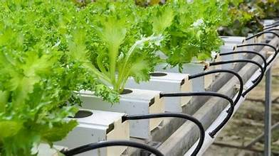
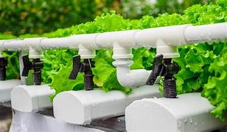
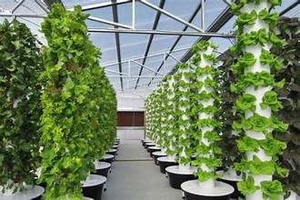
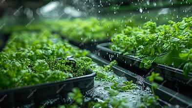
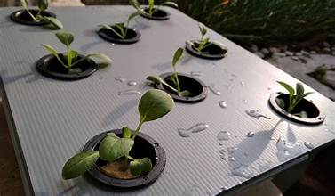

Explore Different Types of Hydroponic Systems
Depending on scale, crop type, and investment, farmers can choose from several hydroponic setups.
Each system has unique advantages suited for different needs.

Deep Water Culture (DWC)
Plants are suspended in oxygenated, nutrient-rich water.

Nutrient Film Technique (NFT)
Thin nutrient film flows over roots inside sloped channels.

Drip System
Nutrient solution is dripped slowly at the base of each plant.

Aeroponics
Roots hang in air and are misted with nutrient solution.

Ebb and Flow (Flood & Drain)
Roots are periodically flooded and drained with nutrient water.

Wick System
Simple, passive setup where nutrients move via wicks.